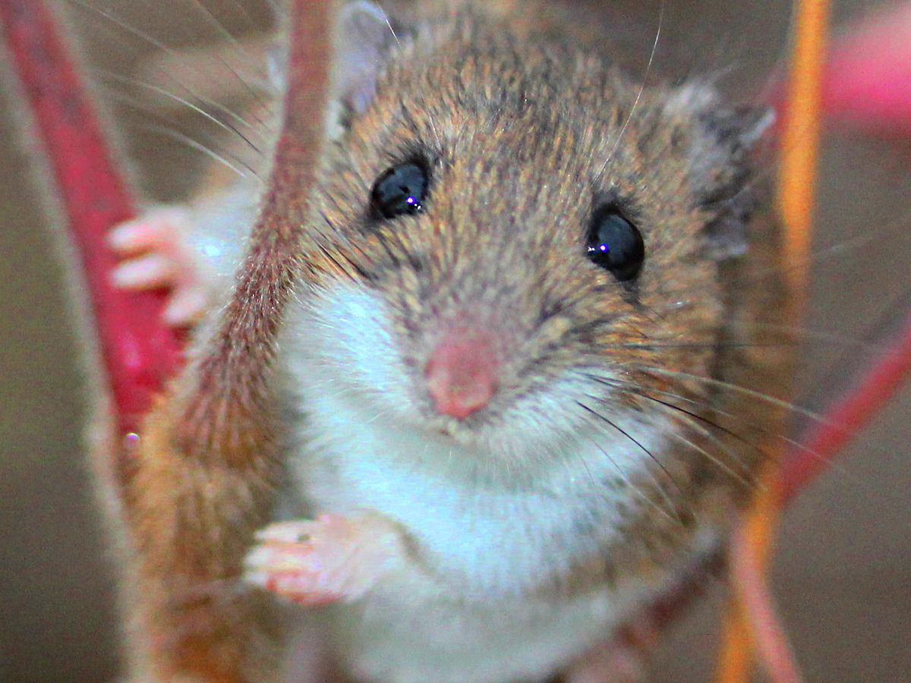
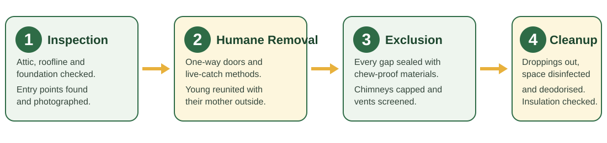

Tompkins County - upstate New York
Mice Removal in Ithaca, NY
Ithaca's mix of wooded gorges, Cayuga Lake shoreline and older homes near the woods makes it prime territory for attic wildlife. Between Cornell-area rentals, Fall Creek and East Hill colonials and houses backing onto the gorges, animals are never far from a warm roofline. When raccoons, bats or squirrels move in, humane removal plus proper exclusion is what keeps them out for good.
Mice work the inside of a house. In Ithaca the first sign is rarely the animal: it is light scratching that travels the same path in the ceiling at night, rice-sized droppings along the attic edge, or a nest of shredded insulation behind stored boxes in a home in Downtown / The Commons or Collegetown. A mouse passes a gap the width of a pencil, so older homes tucked against wooded hillsides offers dozens of ways in: pipe chases, weep holes, garage door corners, and the seam where siding meets foundation.
Local records: 44 small-mammal observations (mice, rats and voles) recorded within 25 km of Ithaca (iNaturalist).
Mice problems in Ithaca
Mice damage a home by volume and persistence. They shred insulation into nests, tunnel through it until its value drops, soil it with urine along their runs, and gnaw wood, plastic and wire insulation as routine. Rats add excavation: Norway rats burrow under slabs and into crawl spaces. The wire gnawing is the risk that changes the conversation, and stored belongings in an infested Ithaca attic come out contaminated and chewed.

Signs to check for
- Light scratching and scurrying at night that travels along the same fixed paths
- Tiny rice-sized droppings along attic edges, in insulation and near stored items
- Gnaw marks on wood, stored boxes and food packaging, with fine shavings
- Grease rub marks along beams and pipes where bodies pass nightly
- Nests of shredded insulation, paper and fabric in quiet attic corners
- A stale, musky odour from wall voids, stronger in warm weather
Mice leave tail drag lines and tiny four-toed prints in attic dust along walls. Rats leave larger prints and clear runways through insulation. Mouse droppings are 1/8 to 1/4 inch, pointed, like dark rice grains. Rat droppings are 1/2 to 3/4 inch, blunt. Size alone separates them. A house mouse weighs under an ounce and passes a 1/4 inch gap, the width of a pencil. A Norway rat weighs a pound and needs about 1/2 inch.
What the records show near Ithaca
44 small-mammal observations (mice, rats and voles) recorded within 25 km of Ithaca (iNaturalist). GBIF, a second dataset, holds 10,260 mammal occurrence records for the area around Ithaca: these animals are established residents of Tompkins County, which is why the work below ends with sealing and screening, not removal alone.
The Ithaca records break down as Eastern Meadow Vole 27, Brown Rat 11, White-footed Mouse 3, Eastern Deer Mouse 2, House Mouse 1 (iNaturalist, research-grade). Counts reflect recording effort as well as animals: proof of presence, not a census.
Mice services in Ithaca
Mice in the attic in Ithaca
The attic is where Ithaca mouse jobs centre: droppings along the edges, nests in quiet corners, runs tunnelled through insulation. The attic visit maps droppings and rub marks to find the active runs, removes the animals inside, and connects the attic picture to the entry survey below, because sealing the attic hatch while the pipe chase stands open is theatre, not exclusion.
Mice and rats in wall voids in Ithaca
Scratching inside a wall, especially a bedroom wall at night, is usually a void run between the foundation gap and the attic. Wall work in Ithaca starts at the bottom entry, not by opening the wall: seal it, remove the animals on the run, and most wall noise ends without a hole cut. An animal dead in a void is a separate, honest conversation about access.
Rats in crawl spaces and basements in Ithaca
Norway rats are ground animals: burrows under slabs, runs along foundation walls, droppings the size of olive pits. Homes near Cayuga Lake and the gorges and older streets in Ithaca with stone or block foundations see the most of it. The job is burrow and entry mapping, removal, and sealing with materials a rat cannot gnaw through, which rules out foam and rules in copper mesh, cement and steel.
Full-perimeter sealing survey in Ithaca
The core mouse service, and the one that decides whether the job holds: a whole-perimeter survey at the quarter-inch standard, every gap a pencil fits through listed, photographed and priced. On older homes tucked against wooded hillsides, the list usually runs longer than homeowners expect: utility entries, vents, weep holes, roof returns, garage seals. You get the full list in writing.
Mouse droppings cleanup and insulation work in Ithaca
Droppings and urine-soiled insulation are removed wet, with respirator protection, never dry swept, and the area disinfected before fresh material goes in. Cleanup is quoted after the survey because the honest number depends on how much insulation is contaminated, and any operator who quotes it flat over the phone is guessing with your money.
Wiring gnaw checks in Ithaca
Constant gnawing is what mice do, and wiring in an infested attic is on the menu. The inspection flags chewed runs and gnaw marks on cables and junction boxes so an electrician can repair what needs repairing; the wildlife operator's part is removing the animals and sealing the building so the new wiring is not chewed by the next tenants.
How mice removal works in Ithaca

- Survey the whole perimeter at the quarter-inch standard. Every gap a pencil fits through is listed and photographed, from foundation seam to roof return. The survey is the job plan and the quote basis.
- Remove the animals already inside. Trapping is targeted at the active runs mapped from droppings and rub marks. No poison is used: poisoned mice die in wall voids.
- Seal with materials rodents cannot chew. Entries are closed with copper mesh, steel and proper sealant, matched to the gap. Foam alone is a snack, not a seal.
- Clean up droppings and restore the attic. Contaminated material comes out wet and bagged, the space is disinfected, and damaged insulation is replaced where its value is gone.
The standard on this site is licensed operators, a written entry list, and no poison inside homes in Tompkins County: poisoned rodents die in walls.
What mice removal costs in Ithaca
| Service | Typical range | Notes |
|---|---|---|
| Inspection and entry-point survey | $150-$300 | Often credited toward the work when you proceed. |
| Single-animal humane removal | $300-$600 | One animal, one entry point, straightforward access. |
| Bat exclusion, full home | $800-$2,500 | Colony work: one-way valves, full seal, guano check. |
| Attic cleanup and disinfection | Quoted after inspection | Depends on droppings volume and insulation condition. |
Ithaca pricing tracks the wider Finger Lakes market. Homes near the gorges or lake with steep rooflines can sit at the higher end of exclusion ranges because safe access takes longer.
Mouse work in Ithaca is priced by the sealing, not by the mouse. A survey plus targeted sealing of a few entries sits near the inspection and single-animal bands; a full perimeter seal on a larger or older home runs above them, and the estimate should list every entry found, sealed or not.
Mice season in Ithaca
Mice move indoors on a temperature trigger. In Ithaca, the first entries come with the first cold nights of autumn, when overnight temperatures fall through the 40s, and attic populations build through winter as outdoor food disappears. Spring brings a second wave of calls, when winter nests are found during cleanouts. Sealing is best done before the autumn push: the same job in July as in November, without the animals already inside.
Mice removal in Ithaca: questions and answers
How much does mice removal cost in Ithaca?
In Ithaca the canonical bands frame the work: inspection $150 to $300, single-animal removal $300 to $600, bat exclusion $800 to $2,500, and cleanup quoted after inspection. Mouse work is priced by the sealing list, not by the mouse: sealing a few entries sits near the lower bands. The written estimate after inspection is the number to trust.
I only saw one mouse in my Ithaca home. Do I really need to worry?
One seen mouse usually means a run, not a resident. Mice are social and breed fast, and the one you saw crossed open space at a busy hour, which the rest avoid. Droppings tell the truth better: fresh droppings along attic edges mean an established group. At the one-mouse stage the sealing list is at its shortest.
What is the best sealant for mouse entry points?
Not foam alone: mice chew through expanding foam in a night. The standard is a chew-proof backing, copper mesh or steel wool packed into the gap, finished with quality sealant; larger openings get sheet metal or cement. The material has to match the gap, which is why the survey lists entries one by one instead of selling a single product.
Can I just use store-bought traps myself?
Traps do catch mice. What they cannot do is close the building: a Ithaca home with open gaps refills from the yard population as fast as you empty it. Trapping is a fair first step for one kitchen mouse. For attic noise, wall runs and droppings in insulation, trapping has to come with the perimeter survey and sealing.
Are mouse droppings in the attic dangerous?
Treat them with respect and without panic. Droppings and urine can carry bacteria and, rarely, viruses, so never dry sweep or vacuum them bare-faced. Cleanup on this site's jobs is done wet, with respirator and gloves, material bagged and the area disinfected. Keep children and pets out of an infested attic until the cleanup is done.
Will mice come back after removal and sealing?
Not through the same doors. Sealing at the quarter-inch standard with chew-proof materials closes the building to the yard population, which is the point of doing the whole perimeter. What sealing cannot cover is gaps the house opens later: a new cable run, a shifted door seal, storm damage. A quick annual check of the known weak points keeps a sealed Ithaca home sealed.
How do mice get into the attic in the first place?
From the ground, almost always. Mice enter at the foundation seam, a pipe chase or a garage door corner, then climb inside wall voids and plumbing runs straight to the attic. Roof entries happen where branches touch, but the classic Ithaca route is up through the walls, which is why attic-only fixes fail and the survey starts at the ground.
Do you use poison for mice in the attic?
No. A poisoned mouse dies where it nests, inside your wall or under your insulation, and the smell runs for weeks with no way to reach it. Poison also travels into the pets and owls that eat mice. Removal on this site's jobs is trapping plus sealing: slower to describe, faster to finish with.